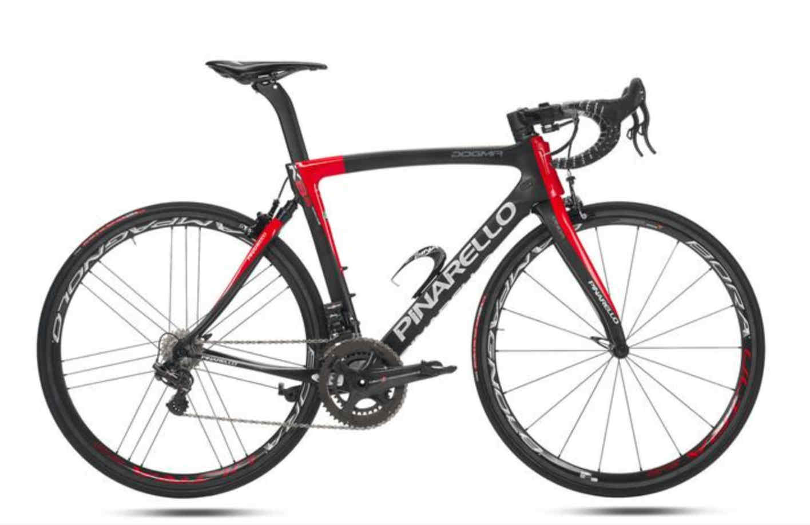
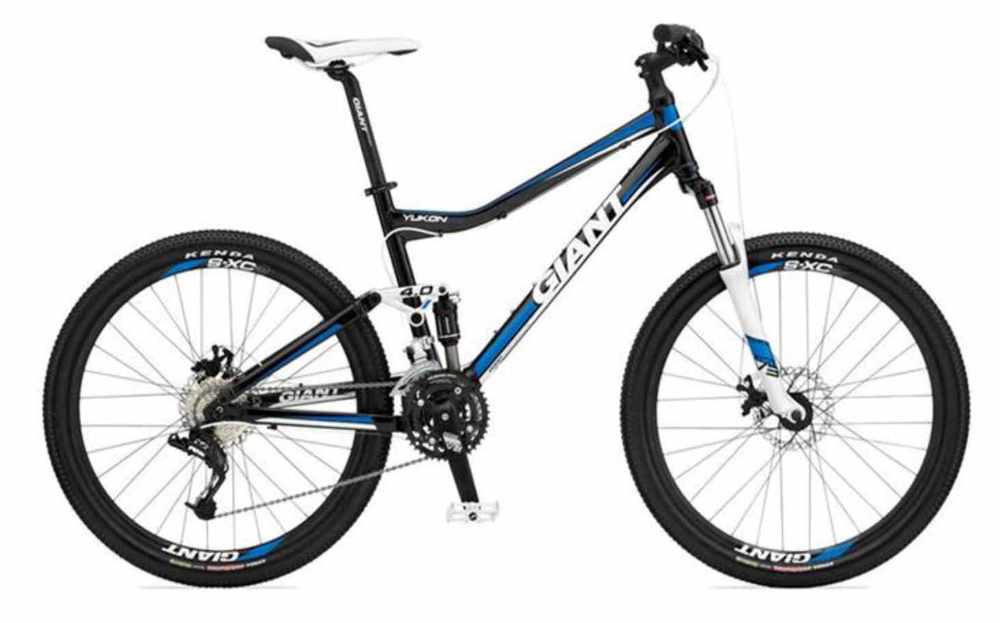

We have many different shapes and styles of bicycles. We know how hard it is to compare some of the top brands when you have to
click back and forth between the bicycle company sites. We have put four of the top Brands we sell, side by side so you not only
see the bikes but you are also able to read about it and check the price.

The Italian brand is best known for its quality road bikes, although it also produces cyclocross, track,
mountain and city bikes. Pinarello bikes have been ridden by a number of top pro teams, including Telekom, Banesto,
Movistar and Team Sky. They're also British Cycling's bike of choice, according to Bike Radar. Price ranging from $2,500 to
$5,125.
pinarello.comRaleigh has an iconic place in cycling history. It made high quality commuter bikes that fit a modest
budget. They say that Furley has been popular this year. The frame is made of steel, the seat is a Raleigh Classic Road and the
headset has FSA Integrated Cartridge Bearings. Bikes range in price from $275 to $690 for comfort bikes, $520 to $1,550 for fitness
bikes, $275 to $1,325 for mountain bikes, and $520 to $2,725 for road bikes, according to Consumer Reports.
raleighusa.com

This is one of the best budget bike brands, Engay says. It gets high ratings in both the mountain and
hybrid bikes categories because of the bikes’ design and features. Cyclists who want a comfortable and confident ride, both
on and off the road, consider Giant first. The ATX Lite, for example, is designed as a cyclocross bike, which is stronger
than a road bike but not as stable as a mountain bike, and you can use it on various terrains, Nemirovski says. Prices range from
$607.99 to $11,905. “And it’s also a good entry-level bike.”
giant-bicycles.comFelt’s goal is to build the best bikes in the world, according to Campus Wheel Works. They say the
bikes feel as if the brand puts the same effort into every one whether it’s a bike for cruising around town, crushing local
single track, or setting your personal best at a triathlon. Felt develops every part of every bike down to the littlest
details with in-house engineers, making the bikes as good as they can possibly be. Prices ranging from $1,785 to $8,999.